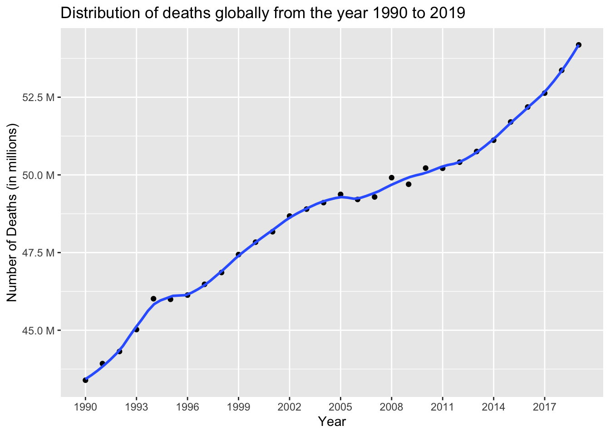
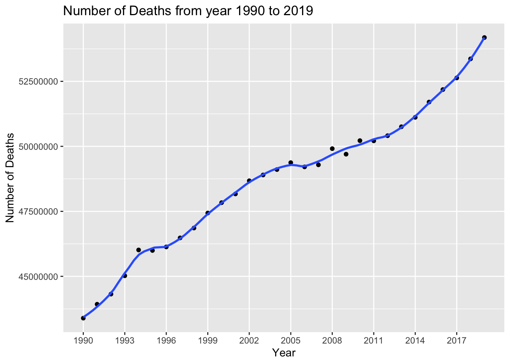
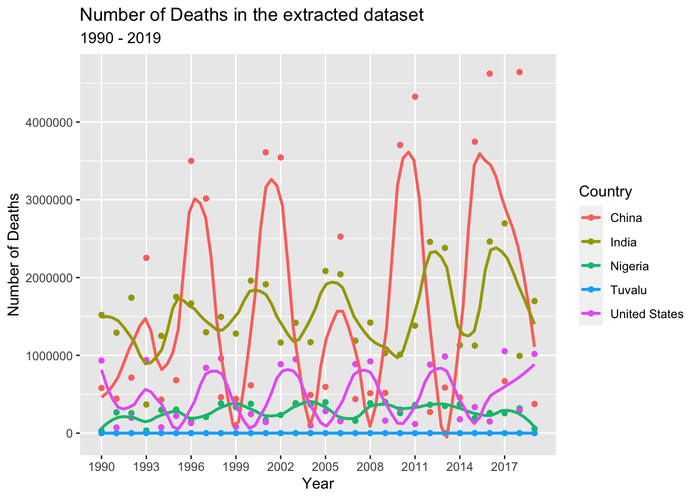

library(tidyverse)
library(tidyr)
library(dplyr)
library(ggplot2)
knitr::opts_chunk$set(echo = TRUE, warning=FALSE, message=FALSE)Final Project: Neha Jhurani
final_project
Project
Part 1. Introduction
Causes of death: Our world in Data The project aims to analyze the causes of death in South Asian countries and in United States.
General Research Question: What are the leading causes of death in South asian countries and in United States.
Dataset Description: The causes of death dataset by “Our World In Data” offers valuable insights into leading causes of mortality globally and across different countries and time periods. The dataset covers a wide range of causes of death, including both communicable and non-communicable diseases, injuries, and other factors contributing to mortality rates.
Unit of Analysis: Each row of the dataset describes the number of deaths caused by the mentioned disease/reason across the given country during the time period mentioned.
Part 2. Literature Review
“Our World in Data” is a reputable online publication that provides comprehensive and evidence-based information on various global issues, including health, population, and mortality. It is known for its rigorous approach to data collection and analysis. The causes of death dataset likely incorporates data from reputable sources, such as national health agencies, the World Health Organization(WHO), and other reliable databases and research publications.
The causes of death dataset provided by “Our World in Data” can help us gain valuable insights into global moratlity patterns. The dataset allows us to analyze and understand the leading causes of death worldwide. By examining trends over time, we can identify shifts in disease burdens and track progress or challenges in pubic health efforts.
By knowing the specific causes of death, policymakers and public health professionals can identify priority areas for intervention and allocate resources effectively. The dataset enables cross-country comparisons, highlighting variations in causes of death. This information is valuable for understanding disparities in health outcomes, identifying successful interventions in sppecific regions, and promoting best practices globally.
Part 3. Dataset Introduction
The Global Burden of Disease is a major global study on the causes of death and disease published in the medical journal The Lancet. These estimates of the annual number of deaths by cause are shown in “Our World in Data”. We extract our data from this source.
Each row of the dataset represents the annual number of deaths that happened because of a certain cause in a specific country during a specific year.
Part 4. Dataset Description
The dataset contains data for all countries(globally) and has 201762 rows and 6 columns. As we want to conduct our analysis for South Asian countries and for United States, we will extract 2 sub datasets from it.
India’,‘Pakistan’,‘Afghanistan’,‘Bangladesh’,‘Bhutan’, ‘Maldives’, ‘Sri Lanka’, ‘Nepal’ and considered to be South Asian countries. We see that the South Asian countries dataset has 991 rows and 6 columns. The United States dataset has 990 rows and 6 columns.
The 6 columns in the dataset represent the following:
Causes name - This represents the cause of death. This can be a disease or a natural phenomena or a legal action
Causes Full Description - This represents if the death is in all age groups or in a particular set of age groups, and weather it is in all the genders or in specific gender
Death Numbers - This represents the annual number of deaths for specific value of cause, year and country
Entity - This represents the name of the country in which the deaths occurred.
Code - This represents the ISO Code of the country in which deaths occurred
Year - This represents the year in which the deaths occurred.
Coding Component:
library(readr)
death_dataset <- read_csv("NehaJhurani_FinalProjectData/CausesOfDeath.csv")
#Dimensions of Global Death Dataset
dim(death_dataset)[1] 201762 6#Columns of death dataset
colnames(death_dataset)[1] "Causes name" "Causes Full Description"
[3] "Death Numbers" "Entity"
[5] "Code" "Year" south_asian_death_dataset <- death_dataset[death_dataset$Entity== (alist('India','Pakistan','Afghanistan','Bangladesh','Bhutan', 'Maldives', 'Sri Lanka', 'Nepal' )),]
# Dimensions of South Asian countries death dataset
dim(south_asian_death_dataset)[1] 991 6# The number of countries considered as South Asian
length(unique(south_asian_death_dataset$Entity))[1] 8# Viewing the first few rows of South Asian dataset
head(south_asian_death_dataset)us_death_dataset <- death_dataset[death_dataset$Entity== 'United States',]
# Dimensions of United States death dataset
dim(us_death_dataset)[1] 990 6# The number of diseases or causes of death in United States
length(unique(us_death_dataset$'Causes name'))[1] 33# Viewing the first few rows of United States dataset
head(us_death_dataset)Data Preprocessing: - Death Number are missing in a lot of rows, we will drop those rows instead of making them 0 because ‘there are no deaths for that particular cause’ or ‘that particular cause of death is non existent’ describes the same case. - Many ISO Codes are missing. As this is same as Country Name that is represented by Entity (which is non null), we will drop Code column. - Dropping ‘Causes Full Description’ because that column is currently not used in our analysis - Rename ‘Entity’ to ‘Country’, ‘Causes name’ to ‘Cause’ and ‘Death Numbers’ to ‘NumberOfDeaths’ for better understandability.
south_asian_death_dataset <- south_asian_death_dataset%>%drop_na('Death Numbers')
south_asian_death_dataset <- south_asian_death_dataset %>%
select(-c(`Causes Full Description`, `Code`)) %>%
rename(Country = `Entity`,
Cause = 'Causes name',
NumberOfDeaths = 'Death Numbers') %>%
as.data.frame()
head(south_asian_death_dataset)us_death_dataset <- us_death_dataset%>%drop_na('Death Numbers')
us_death_dataset <- us_death_dataset %>%
select(-c(`Causes Full Description`, `Code`)) %>%
rename(Country = `Entity`,
Cause = 'Causes name',
NumberOfDeaths = 'Death Numbers') %>%
as.data.frame()
head(us_death_dataset)Summary statistics for both datasets:
# Displaying summary statistics for both the datasets
summary(south_asian_death_dataset) Cause NumberOfDeaths Country Year
Length:957 Min. : 0 Length:957 Min. :1990
Class :character 1st Qu.: 101 Class :character 1st Qu.:1997
Mode :character Median : 1728 Mode :character Median :2005
Mean : 39066 Mean :2005
3rd Qu.: 12677 3rd Qu.:2012
Max. :1942316 Max. :2019 summary(us_death_dataset) Cause NumberOfDeaths Country Year
Length:967 Min. : 0 Length:967 Min. :1990
Class :character 1st Qu.: 1250 Class :character 1st Qu.:1997
Mode :character Median : 10895 Mode :character Median :2005
Mean : 73632 Mean :2005
3rd Qu.: 53069 3rd Qu.:2012
Max. :957455 Max. :2019 Part 5. Analyses Plan
We will analyze both the sub datasets created above to answer the following granular questions :
What are the total number of deaths over the years in South Asian countries?
Which countries in South Asia have the highest number of deaths?
Which countries in South Asia have the lowest number of deaths?
What is most common cause of death in South Asian Countries?
What has been the trend of few of the most common cause of deaths in South Asian countries?
What is the total number of deaths in United States over the years?
What is the most common cause of death in United States?
What is the trend of the most common cause of death in recent years in United States?
Which year had the most number of deaths in United States?
How is the number of deaths related to mental illness over the years in United States?
Visual representations, such as graphs, charts, and diagrams, can simplify complex concepts, patterns, or relationships, making them easier to understand and comprehend. They help us identify patterns, trends, and anomalies in data more easily. We will be using the following types of graph for our project:
Bivariate Graphs : They allow us to identify the nature of the relationship between two variables. We can determine if the variables are positively or negatively correlated, or if there is no apparent relationship between them. We will be using these graphs to find the relations between the time-period and the number of deaths across countries and diseases.
Histogram Graphs : Histograms provide a visual representation of the distribution of data, allowing us to observe the shape, center, and spread of the variable. We will be using histograms to represent the most common diseases across countries and the distribution of death over the years in United States
Part 6. Statistical Analysis and Visualizations
South Asian Countries:
Total number of deaths in South Asian countries from year 1990 - 2019:
sum(south_asian_death_dataset$NumberOfDeaths)[1] 37386157Representing Number of Deaths in South Asian countries over the years:
south_asian_death_dataset %>%
group_by(Country, Year)%>%
summarise(deaths = sum(NumberOfDeaths))%>%
ggplot(aes(x = Year, y = deaths, col = Country)) +
geom_point(alpha = 1) +
geom_smooth(se = F, span = 0.2) +
scale_x_continuous(breaks = seq(1990, 2019, 3), minor_breaks = T) +
labs(title = "Number of Deaths in South Asian Countries",
subtitle = "1990 - 2019",
x = "Year",
y = "Number of Deaths",
col = "Country")We can see that the number of Deaths are highest in India consistently over the years whereas it is consistenly lower in countries like Sri lanka, Bhutan and Maldives. One of the reasons for this is because India is densely populated when compared to other South Asian countries. The other reasons include the differences in affordability, access and quality of healthcare services, income levels, education and living conditions, etc.
Representing the most common causes of death in South Asian counteries as table and as a histogram:
most_common_diseases <- south_asian_death_dataset%>%
group_by(Cause) %>%
summarise(deaths = sum(NumberOfDeaths)) %>%
arrange(desc(deaths)) %>%
ungroup() %>%
mutate(Cause = reorder(Cause, deaths))
most_common_diseases <- head(most_common_diseases)
barplot(height = most_common_diseases$deaths, names = most_common_diseases$Cause, las = 2, ylab = "Number of Deaths", cex.axis = 0.8, main = "Most Common Causes of Death in South Asian Countries", col = "pink")
most_common_diseasesWe can see that the top 3 causes of death in South Asian countries are - Cardiovascular diseases, Diarrheal diseases and Chronic respiratory diseases
For further analysis, we are analyzing the trends of each of the top causes of death for the years across South Asian Countries:
cardio_sa_dataset <- south_asian_death_dataset[south_asian_death_dataset$'Cause'=='Cardiovascular diseases',]
cardio_sa_dataset%>%
group_by(Country, Year, NumberOfDeaths)%>%
ggplot(aes(x = Year, y = NumberOfDeaths, col = Country)) +
geom_point(alpha = 0.5) +
geom_smooth(se = F, span = 1.5) +
scale_x_continuous(breaks = seq(1990, 2019, 3), minor_breaks = T) +
labs(title = "Number of Deaths due to Cardiovascular diseases in South Asian Countries",
subtitle = "1990 - 2019",
x = "Year",
y = "Number of Deaths",
col = "Country")We see that the number of deaths due to cardiovascular diseases has increased steeply in India whereas there is only a slight increase in other countries. The increase in deaths can be because of changes in lifestyle, economic development, rapid urbanization, etc
diarr_sa_dataset <- south_asian_death_dataset[south_asian_death_dataset$'Cause'=='Diarrheal diseases',]
diarr_sa_dataset%>%
group_by(Country, Year, NumberOfDeaths)%>%
ggplot(aes(x = Year, y = NumberOfDeaths, col = Country)) +
geom_point(alpha = 0.5) +
geom_smooth(se = F, span = 1.5) +
scale_x_continuous(breaks = seq(1990, 2019, 3), minor_breaks = T) +
labs(title = "Number of Deaths due to Diarrheal diseases in South Asian Countries",
subtitle = "1990 - 2019",
x = "Year",
y = "Number of Deaths",
col = "Country")
We see a steep decrease in diarrheal diseases in India, but there is very slight decrease in other countries. This shows that whatever interventions and policies implemented to address this specific cause of death has successfully worked over the years. In future, if there is an increase in this disease in any other part of the world, these proofs will help us control the disease soon.
chronic_sa_dataset <- south_asian_death_dataset[south_asian_death_dataset$'Cause'=='Chronic respiratory diseases',]
chronic_sa_dataset%>%
group_by(Country, Year, NumberOfDeaths)%>%
ggplot(aes(x = Year, y = NumberOfDeaths, col = Country)) +
geom_point(alpha = 0.5) +
geom_smooth(se = F, span = 1.5) +
scale_x_continuous(breaks = seq(1990, 2019, 3), minor_breaks = T) +
labs(title = "Number of Deaths due to Chronic respiratory diseases in South Asian Countries",
subtitle = "1990 - 2019",
x = "Year",
y = "Number of Deaths",
col = "Country")
We see that the number of deaths increases significantly in case of india but there is hardly any change in case of other countries. The increase observed in India may be because of air pollution, especially in urban areas and indoor air pollution from the use of solid fuels for cooking and heating.
United States:
Total number of deaths in United States from year 1990 - 2019:
sum(us_death_dataset$NumberOfDeaths)[1] 71201724Representing Number of Deaths in United States over the years:
us_death_dataset %>%
group_by(Country, Year)%>%
summarise(deaths = sum(NumberOfDeaths))%>%
ggplot(aes(x = Year, y = deaths, col = Country)) +
geom_point(alpha = 1) +
geom_smooth(se = F, span = 0.2) +
scale_x_continuous(breaks = seq(1990, 2019, 3), minor_breaks = T) +
labs(title = "Number of Deaths in United States Countries",
subtitle = "1990 - 2019",
x = "Year",
y = "Number of Deaths",
col = "Country")
We can see that the number of Deaths have increased exponentially over the years in United States.
Representing the most common causes of death in United States as table and as a histogram:
most_common_diseases <- us_death_dataset%>%
group_by(Cause) %>%
summarise(deaths = sum(NumberOfDeaths)) %>%
arrange(desc(deaths)) %>%
ungroup() %>%
mutate(Cause = reorder(Cause, deaths))
most_common_diseases <- head(most_common_diseases)
barplot(height = most_common_diseases$deaths, names = most_common_diseases$Cause, las = 2, ylab = "Number of Deaths", cex.axis = 0.7, main = "Most Common Causes of Death in United States", col = "pink")
most_common_diseasesWe can see that the top causes of death in United States is Cardiovascular diseases and Neoplasms
For further analysis, we are analyzing the trends of each of the top causes of death for the years across United States:
cardio_us_dataset <- us_death_dataset[us_death_dataset$'Cause'=='Cardiovascular diseases',]
cardio_us_dataset%>%
group_by(Country, Year, NumberOfDeaths)%>%
ggplot(aes(x = Year, y = NumberOfDeaths, col = Country)) +
geom_point(alpha = 0.5) +
geom_smooth(se = F, span = 1.5) +
scale_x_continuous(breaks = seq(1990, 2019, 3), minor_breaks = T) +
labs(title = "Number of Deaths due to Cardiovascular diseases in United States",
subtitle = "1990 - 2019",
x = "Year",
y = "Number of Deaths",
col = "Country")
We see that the number of deaths due to cardiovascular diseases in United States reduced from the year 1990 to 2010. After that, we see an exponential increase in the number of deaths. Advances made in medical treatments and awareness about the risks of the disease decreases the risk of cardiovascular diseases whereas aging population (as the population ages the risk of cardiovascular disease also increases) increases the risk of it. The risk factors have changed over time, such as obesity rates, unhealthy dietary patterns, sedentary lifestyles, etc because of which we are seeing the above trend.
neo_us_dataset <- us_death_dataset[us_death_dataset$'Cause'=='Neoplasms',]
neo_us_dataset%>%
group_by(Country, Year, NumberOfDeaths)%>%
ggplot(aes(x = Year, y = NumberOfDeaths, col = Country)) +
geom_point(alpha = 0.5) +
geom_smooth(se = F, span = 1.5) +
scale_x_continuous(breaks = seq(1990, 2019, 3), minor_breaks = T) +
labs(title = "Number of Deaths due to Neoplasms in United States",
subtitle = "1990 - 2019",
x = "Year",
y = "Number of Deaths",
col = "Country")
We see a steep increase in the number of deaths due to Neoplasms over the years in United States. This may be because of lifestyle factors such as excessive alcohol comsumption, tobacco use, etc.
frequency_of_deaths <- us_death_dataset%>%
group_by(Year) %>%
summarise(deaths = sum(NumberOfDeaths)) %>%
arrange(desc(deaths)) %>%
ungroup() %>%
mutate(Year = reorder(Year, deaths))
barplot(height = frequency_of_deaths$deaths, names = frequency_of_deaths$Year, las = 2, ylab = "Number of Deaths", cex.axis = 0.6, main = "Most Common Causes of Death in United States", col = "pink", cex.lab = 1, width = 35)We can see that the number of death have increased from 1990 to 2019 in United States. Therefore, the lowest n umber of deaths were in 1990 and highest in 2019
Mental illness significantly affects individual well-being, quality of life, and overall functioning. It can lead to emotional distress, impaired cognitive functioning, and difficulties in maintaining relationships, work, and daily activities. It is a leading cause of disability worldwide and contributes to a substantial burden of disease. By addressing mental health issues, societies can reduce the overall burden of disease and promote healthier communities. It has a significant impact on public health. A lot of causes related to mental illness have been specified in the dataset. We are considering “Drug use disorders”, “Alcohol use disorders” and “Self-harm” to analyze the number of deaths due to mental health in United States:
mi_us_dataset <- us_death_dataset[us_death_dataset$'Cause'== (alist("Alcohol use disorders","Drug use disorders","Self-harm")),]
mi_us_dataset%>%
group_by(Cause, Year, NumberOfDeaths)%>%
ggplot(aes(x = Year, y = NumberOfDeaths, col = Cause)) +
geom_point(alpha = 0.5) +
geom_smooth(se = F, span = 1.5) +
scale_x_continuous(breaks = seq(1990, 2019, 3), minor_breaks = T) +
labs(title = "Number of Deaths due to Mental Illness in United States",
subtitle = "1990 - 2019",
x = "Year",
y = "Number of Deaths",
col = "Cause")We can see that the number of deaths due to mental illness (all 3 underlying considered causes) has increased over the years.
Part 7. Conclusion and Discussion
After the above analysis, we know that there were approximately 37 million deaths over the years in South Asian Countries. The highest number of deaths were in India and the lowest were in Bhutan, Sri Lanka and Maldives. The most common cause of death is Cardiovascular diseases. We were also able to see that the number of deaths changed significantly for the years for India but not as much for other countries.
Approximately 71 million people died in united States over the years. The most common cause of death was Cardiovascular which started increasing only after 2010 (It was reducing before that). We also analysed the tren of Neoplasms and could see that the number of deaths increased steeply over the years. The number of deaths are increasing rapidly over the years. As mental health is as important as the physical well being, we analysed the data for it. We could see an increase in death due to mental illness as well over the years.
This dataset can be used to do an in-depth analyses on the causes of death, like relating obesity rate with cardiovascular disease, etc. This dataset in corelation with other variables can be utilized to investigate the underlying causes of mortality. This will improve our understanding of public health challenges and inform future research directions.
Part 8. Bibliography
- https://ourworldindata.org/causes-of-death
- R Language as programming language
- The R Graph Gallery-https://r-graph-gallery.com/
- https://www.ncbi.nlm.nih.gov/pmc/articles/PMC8234939/